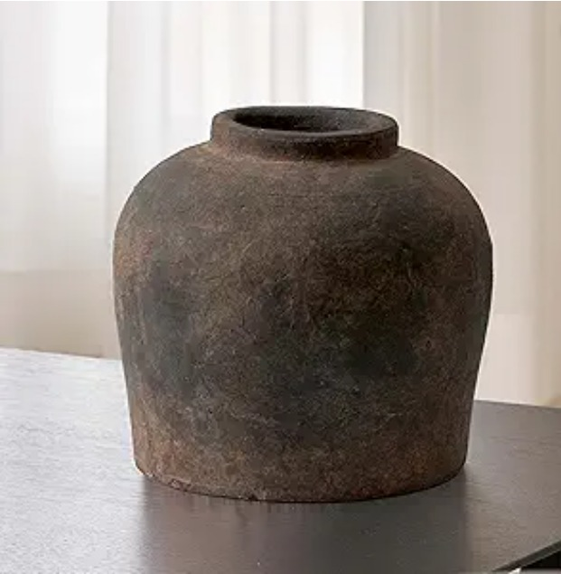
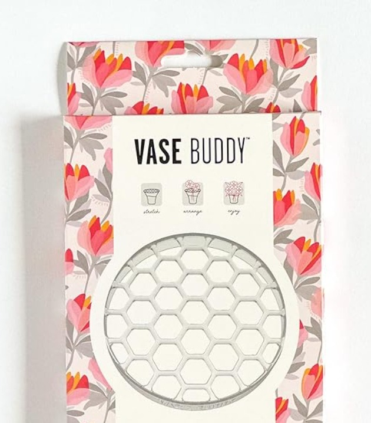

It's easy to end up with a lot of vases. They're inexpensive, they come in endless shapes, and each one feels like a fresh idea at the time. Then the shelf fills up, and you notice you keep reaching for the same one or two.
The slow version of vase buying is simple: pick one with a clear job, live with it for a season, and add another only when there's a gap you can name. Here's what that looks like in practice, a statement piece with real character and a small tool that makes the glass vases you already own work harder.
The statement piece
One vase that looks finished even when it's empty.

LB2 Brown Ceramic Vase, 11" Distressed Zen-Style Pitcher
An 11-inch terra-cotta-style pitcher vase with a weathered, distressed finish that does the decorating before a single stem goes in. The wide shoulders and heavy look suit dried branches, pampas grass, or one oversized stem far better than a tight bouquet. It's offered in several finishes, so you can match it to your room.
Check price on AmazonThe tool that makes any glass vase easier
Better arrangements without the foam.

Vase Buddy Reusable Silicone Flower Arranging Grid
A stretchy silicone grid that fits over the rim of a vase and self-grips the glass, so stems stay exactly where you place them instead of slumping to one side. It replaces floral foam, tape grids, and wire setups, and you can change the water without taking the arrangement apart. Made for glass vases with openings between 5 and 8 inches.
Check price on AmazonA simple rule for buying vases
Buy for a gap you can name, not for a display. Before adding a vase, ask what will go in it and where it will sit. If you can't answer both, wait.
A heavy, textured piece like the brown pitcher suits dried branches and single stems, while fresh bouquets tend to look best in clear glass, which is where a grid like the Vase Buddy earns its keep. If you need somewhere for a vase to sit, a long console works well; we included one in The Aesthetic Home Edit.